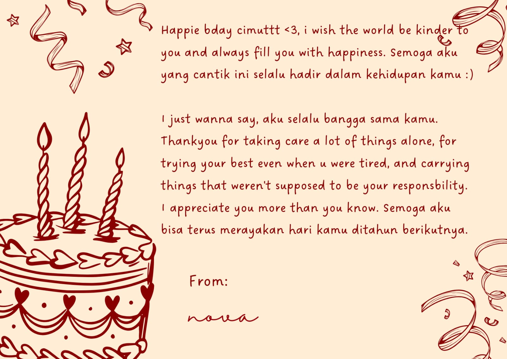
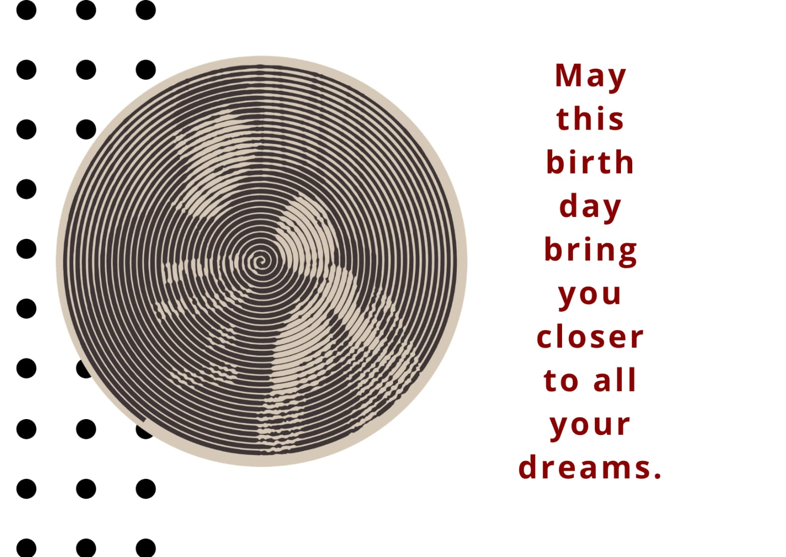
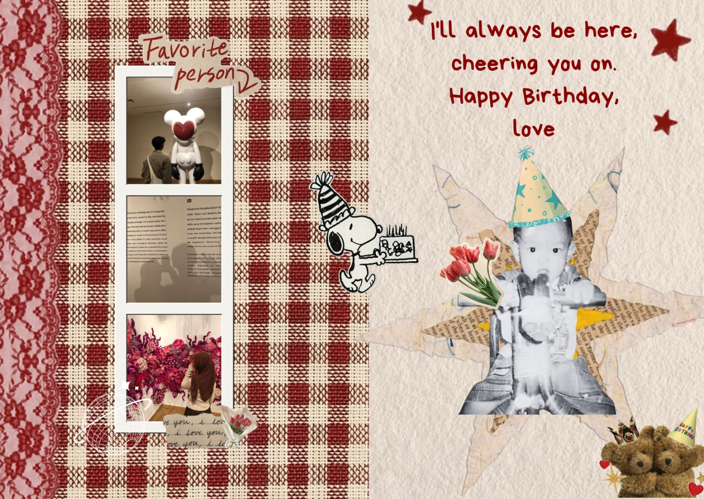

```html
<!-- SCRAPBOOK -->
<section id="stageScrapbook" class="stage-scrapbook" style="display: none;">
  <div id="album-desk" class="album-desk">
    <div id="scrapbookBook" class="scrapbook-book">

      <!-- SLIDE 1 -->
      <article class="scrapbook-page page-1" data-page="1">
        <div class="page-paper-base plain-page">
          <div class="plain-photo-slot">
            
            <span class="empty-slot-placeholder">Foto 1</span>
          </div>
        </div>
      </article>

      <!-- SLIDE 2 -->
      <article class="scrapbook-page page-2" data-page="2">
        <div class="page-paper-base plain-page">
          <div class="plain-photo-slot">
            
            <span class="empty-slot-placeholder">Foto 2</span>
          </div>
        </div>
      </article>

      <!-- SLIDE 3 -->
      <article class="scrapbook-page page-3" data-page="3">
        <div class="page-paper-base plain-page">
          <div class="plain-photo-slot">
            
            <span class="empty-slot-placeholder">Foto 3</span>
          </div>
        </div>
      </article>

      <!-- SLIDE 4 -->
      <article class="scrapbook-page page-4" data-page="4">
        <div class="page-paper-base plain-page">
          <div class="plain-photo-slot">
            
            <span class="empty-slot-placeholder">Foto 4</span>
          </div>
        </div>
      </article>

      <!-- SLIDE 5 -->
      <article class="scrapbook-page page-5" data-page="5">
        <div class="page-paper-base plain-page">
          <div class="plain-photo-slot">
            
            <span class="empty-slot-placeholder">Foto 5</span>
          </div>
        </div>
      </article>

      <!-- SLIDE 6 -->
      <article class="scrapbook-page page-6" data-page="6">
        <div class="page-paper-base plain-page">
          <div class="plain-photo-slot">
            
            <span class="empty-slot-placeholder">Foto 6</span>
          </div>
        </div>
      </article>

      <!-- SLIDE 7 -->
      <article class="scrapbook-page page-7" data-page="7">
        <div class="page-paper-base plain-page">
          <div class="plain-photo-slot">
            
            <span class="empty-slot-placeholder">Foto 7</span>
          </div>
        </div>
      </article>

    </div>
  </div>

  <!-- NAVIGASI SCRAPBOOK -->
  <div class="scrapbook-navigation">
    <button id="prevPageBtn" type="button">❮</button>
    <span id="pageIndicator">1 / 7</span>
    <button id="nextPageBtn" type="button">❯</button>
  </div>

  <!-- TOMBOL ULANG -->
  <button id="replayBtn" type="button">Ulangi dari Awal</button>
</section>

<!-- CSS FOTO: menggantikan style inline lama yang menyembunyikan foto -->
<style>
  .plain-photo-slot {
    position: relative;
    overflow: hidden;
  }

  .plain-photo-slot .memory-photo {
    display: block;
    width: 100%;
    height: 100%;
    object-fit: cover;
  }

  .plain-photo-slot .memory-photo[src=""] {
    display: none;
  }

  .plain-photo-slot .empty-slot-placeholder {
    display: none;
  }

  .plain-photo-slot .memory-photo[src=""] + .empty-slot-placeholder {
    display: flex;
  }
</style>
```
